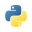

Снизить операционные затраты
Упростить администрирование, убрать ручные операции и рациональнее использовать устройства и инфраструктуру.
Business Development Manager (Enterprise). Помогаю заказчикам сформулировать потребность, выбрать ИТ- или ИБ-решение и провести проект от согласования до внедрения.
Начинаю с ожидаемого бизнес-эффекта и подбираю решения с понятным планом реализации.
Упростить администрирование, убрать ручные операции и рациональнее использовать устройства и инфраструктуру.
Усилить контроль устройств и доступа, сократить инциденты и повысить устойчивость корпоративной среды.
Обновлять устаревшие решения, внедрять управляемые цифровые сервисы и поддерживать импортозамещение.
Автоматизировать обработку данных и дать сотрудникам безопасные цифровые инструменты для более быстрых рабочих процессов.
Веду технически грамотный диалог на стыке ИТ и ИБ: уточняю требования с заказчиком, обсуждаю архитектурные варианты с экспертами и превращаю потребность в бизнес-кейс и план проекта.
 Ринго UEMmacOS · Windows · iOS · Linux↗
Ринго UEMmacOS · Windows · iOS · Linux↗
 SOTI MobiControlAndroid · iOS · Windows↗
SOTI MobiControlAndroid · iOS · Windows↗
 WorksPad MDMуправление мобильными устройствами↗
WorksPad MDMуправление мобильными устройствами↗
 Headwind MDMAndroid · self-hosted↗
Headwind MDMAndroid · self-hosted↗
 Samsung Knoxenrollment · device security↗
Samsung Knoxenrollment · device security↗
 JavaScript
JavaScript Next.js
Next.js NestJSPHP
NestJSPHP Go
Go
 PostgreSQL
PostgreSQL MongoDB
MongoDB DockerRedis
DockerRedis
PythonJava C#
C# Rust
Kotlin
Rust
Kotlin Swift
Swift GraphQL
GraphQL Kubernetes
Kubernetes AWS
AWS Git
Git
Использую Agile-подход: уточняю решение поэтапно, синхронизирую участников и сверяю ход проекта с критериями успеха.
Уточняю контекст, цели, пользователей и ограничения. Формулирую задачу и критерии успеха.
Итог: согласованы задача и критерии успехаСогласую бизнес-кейс, архитектуру и состав MVP с заказчиком и командой предпродажной подготовки.
Итог: выбран вариант решения и определён состав MVPОбъединяю продуктовую, техническую, коммерческую и партнёрскую команды; согласую сроки, риски и зависимости.
Итог: согласованы план, сроки и ответственныеСобираю обратную связь, сопровождаю внедрение и сверяю результаты с бизнес-целями и критериями успеха.
Итог: внедрение завершено, результат оценён по критериям успехаВопросами прохожу от контекста и проблемы к последствиям и ценности решения.
Делаю выбор понятным, связываю ценность с приоритетами и упрощаю следующий шаг.
Приношу отраслевой инсайт, адаптирую аргументацию и помогаю заказчику двигаться к решению.
Примеры проектной работы.
Развитие сетевой инфраструктуры для устойчивой связи площадок и корпоративных сервисов.
Миграция сетевой безопасности с сохранением контроля доступа и защиты корпоративной сети.
Поставка ИТ-оборудования для развития инфраструктуры и поддержки операционных задач.
Поставка серверных лицензий для легального использования корпоративного программного обеспечения.
Цифровизация процессов в аптеках для повышения управляемости операций и сокращения ручной работы.
Расширение мощности ЦОД для поддержки растущей вычислительной нагрузки.
Проекты по управлению парком устройств и развитию ИТ-инфраструктуры для поддержки задач бизнеса.
 Аптека СтоличкиФАРМАЦЕВТИКА · РИТЕЙЛ
Аптека СтоличкиФАРМАЦЕВТИКА · РИТЕЙЛОпыт взаимодействия с корпоративными решениями: мобильное управление, ИБ, серверы, сети и виртуализация.
 Netacнакопители · память
NNERPA NORDсерверные платформы
Netacнакопители · память
NNERPA NORDсерверные платформы
В каждом проекте связываю потребность бизнеса с технологическим решением, экономическим обоснованием и совместной работой команд.
Снизить затраты на управление парком устройств Windows, iOS и Android и уменьшить число связанных с ними инцидентов.
Собрал требования бизнеса и ИБ, согласовал целевой UEM/MDM-сценарий с командой предпродажной подготовки и техническими специалистами, координировал внедрение.
затрат на администрирование
−33%ИБ-инцидентов
Заменить Cisco ISE с сохранением централизованного контроля сетевого доступа и совместимости с корпоративной сетью.
Выяснил требования к сети и сценариям доступа, участвовал в выборе отечественной платформы и согласовании плана миграции с заказчиком и инженерами.
целевое решение согласовано и реализовано
Снизить эксплуатационные затраты на стационарные киоски и сделать рабочее место мобильнее.
Собрал требования пользователей, подготовил бизнес-кейс и координировал переход к модульным планшетным решениям.
операционных затрат
Ускорить типовые операции с корпоративными данными, снизить число ручных ошибок и сохранить информацию внутри защищённого контура.
Скоординировал подготовку и внедрение языковой модели в закрытом контуре вместе с заказчиком и технической командой.
обработка данных внутри контура
Выявить уязвимости, определить приоритеты их устранения и повысить уровень защищённости корпоративной среды.
Инициировал оценку уязвимостей, помог сформировать план устранения и координировал переход от диагностики к реализации мер защиты.
после реализации проектов